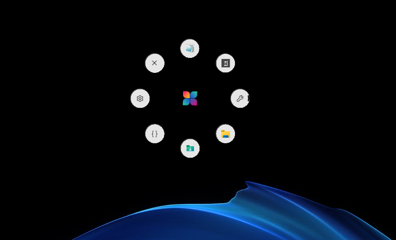
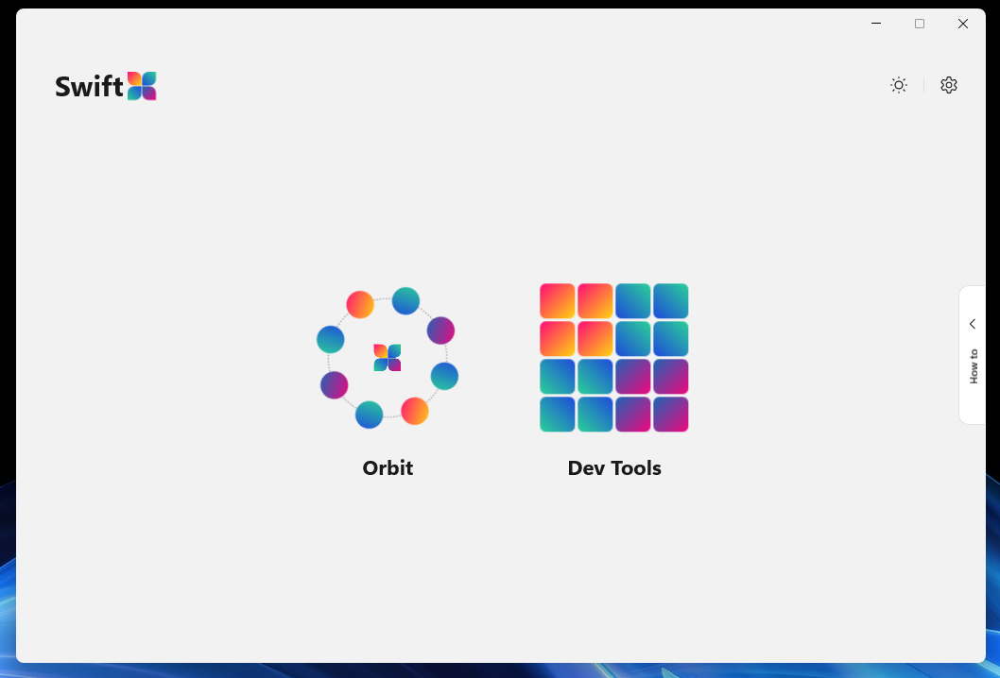
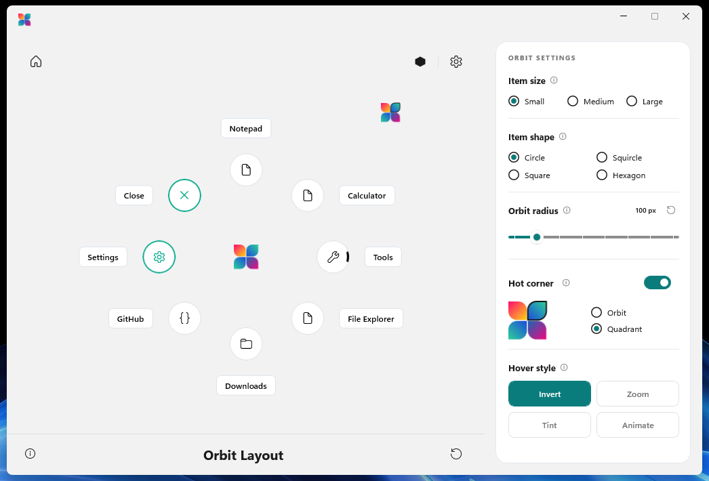
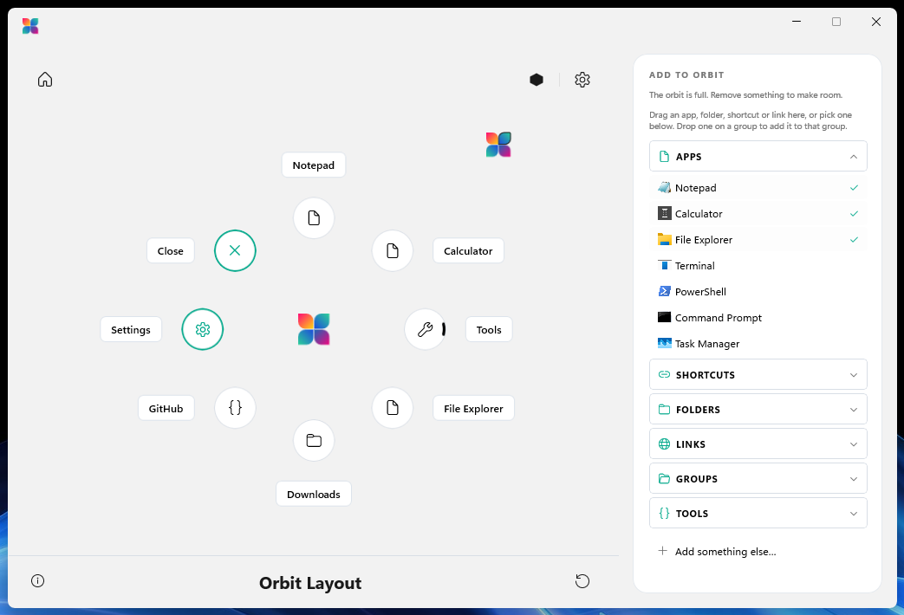
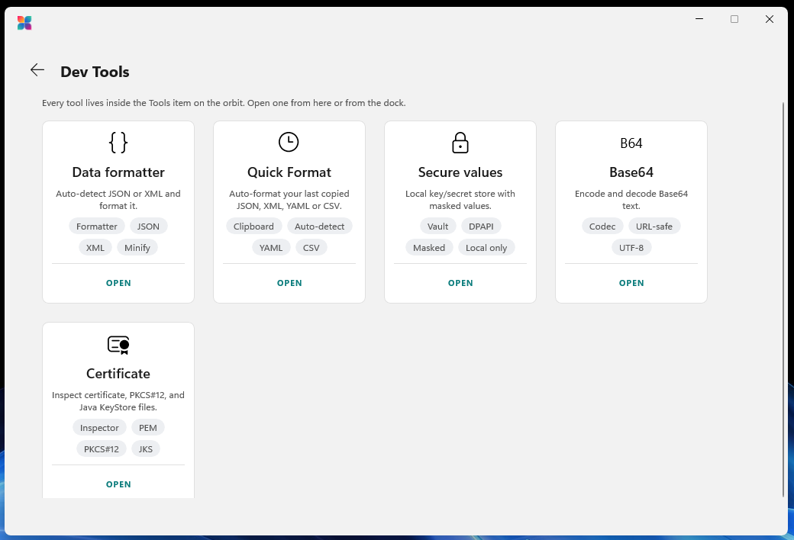
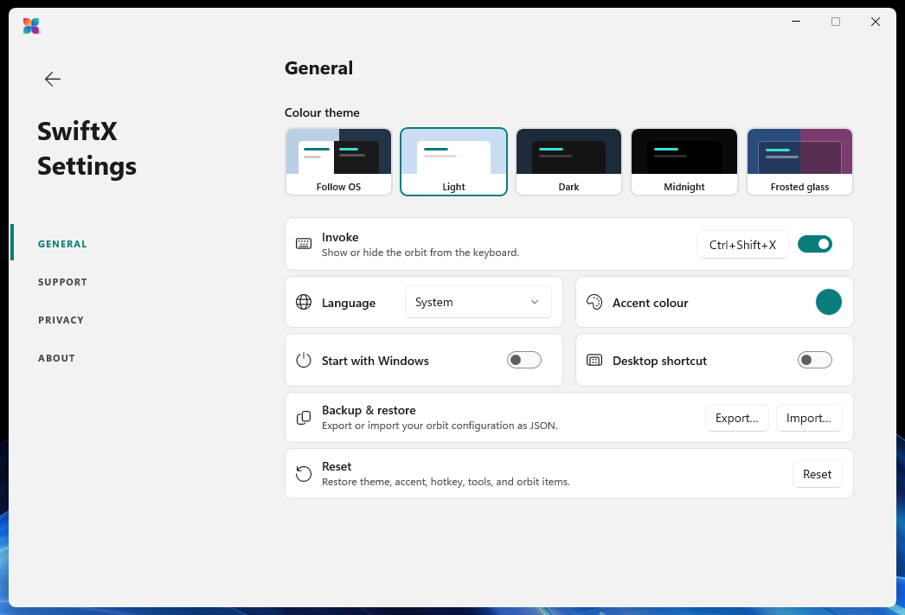
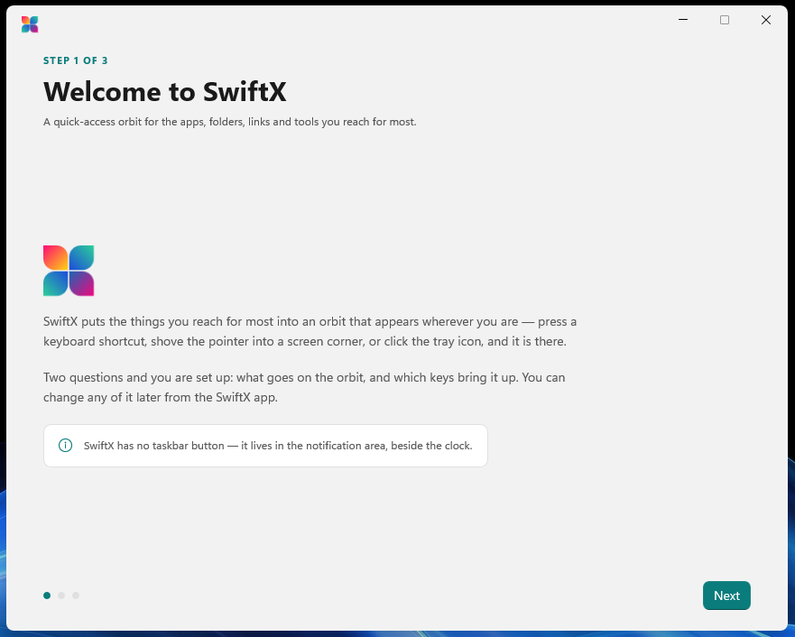
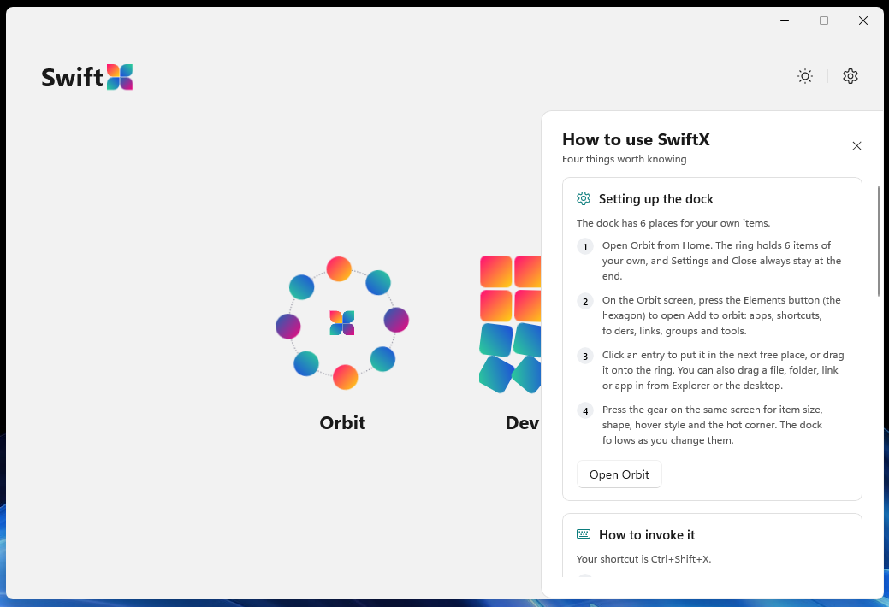

One shortcut, anywhere.
Ctrl + Shift + X by default. Remap it to anything with Ctrl, Alt or Win. If another app already owns a combination, SwiftX tells you instead of failing silently.
Ctrl+
Shift+
X
SwiftX for Windows 11
A quick-access orbit for your apps, files, folders and links. Summon it with a keystroke, a screen corner or the tray.
Hover the items. Then press Ctrl Shift X anywhere on this page.
It's not a dock. It's not a Start menu. It's an orbit that shows up exactly where your hands already are, and gets out of the way the moment you've picked.
Summon
The orbit is a transparent overlay. Only the items take input, and every other pixel is click-through, so it can cover the screen without covering your work.
Ctrl + Shift + X by default. Remap it to anything with Ctrl, Alt or Win. If another app already owns a combination, SwiftX tells you instead of failing silently.
Push the pointer into a corner and rest it there for a beat. The orbit appears with no click. Try it below.
Left-click the tray icon to summon or dismiss. Right-click for the rest. Hide orbit is a real off switch: nothing brings it back until you say so.
Customize
Six slots for your own apps, files, folders, links and groups, with Settings and Close pinned to the last two. Then tune how it looks and how it answers the pointer. Every control below is live.
Swaps the item to the opposite colour and grows it slightly.
Icons come straight from the shell, matching Explorer, overlays and all. A web link wears its own site icon, or pick any Fluent glyph, or your own picture.
A group opens a concentric outer orbit. The inner one never moves, so you never lose your bearings.
Light, Dark, Midnight, Frosted glass with three frost levels, or follow Windows. The orbit's bubbles are live acrylic in every one.
Or follow Windows. Right-to-left languages mirror the tool windows.
Drop anything from Explorer or a browser onto a slot. Drag items to rearrange; a drop lands on the nearest slot.
The first-run guide picks what goes on the orbit and what summons it. Nothing is written until you press Finish.
Export your whole setup to one JSON file, carry it to another PC, or start fresh in one click.
Hot corner
Open the whole orbit at the corner, or a quadrant: four items on a quarter circle centred on the corner itself. The pointer is already there, so each one is a short flick away.
Move the pointer into the top-left corner and hold it there.Tap the highlighted corner.
Or click the SwiftX icon in the tray.
A corner clipped in passing doesn't count. Rest for a quarter second and it fires.
The pointer stops dead against the screen edge, so a few pixels is all it ever needs.
It re-arms only after you leave. A held mouse button never fires it, so window snaps still work.
The pointer is polled on a timer the tray already owns. Per monitor, taskbar or not.
The SwiftX app
Behind the orbit's Settings item: arrange the orbit on a live canvas, manage the tools, and change how SwiftX looks and behaves. There's no taskbar button. It lives beside the clock.








Built-in tools
They live inside the orbit's Tools item, one flick from wherever you are. Everything you paste or open is processed on your PC. Try the formatter right here. It runs in your browser, too.
Auto-detects JSON and XML. Format, validate, minify, sort keys, escape, and convert between the two. Hardened against XML entity tricks.
Formats whatever you last copied (JSON, XML, YAML or CSV) the moment you open it. No pasting required.
A local key and secret store. Values stay masked, copy on demand, and are encrypted with Windows' own per-user protection (DPAPI).
Encode and decode text, with a URL-safe alphabet option. Or encode a file's bytes directly.
Inspect .cer, .crt, .der and .pem files, PKCS#7 bundles, password-protected PFX and Java KeyStores, field by field.
Privacy
No account. No server. No analytics. SwiftX isn't private because of a policy. It's private because there's nowhere else for your data to go.
Your orbit items and settings are saved to this PC only. There's no SwiftX account and no server to sync to.
SwiftX collects no usage data, sends no crash or telemetry reports, and shows no ads.
Secure values use Windows' own per-user encryption, readable only while you're signed in to this account on this device.
Text you paste and files you open in the built-in tools are processed on this device and never uploaded anywhere.
Export your whole setup at any time from Settings, and Reset clears it back to defaults.
The stars you give SwiftX are saved with your settings and sent nowhere. The feedback links simply open your browser.
When you put a web link on the orbit, SwiftX asks that site for its icon so the item can show it, falling back to DuckDuckGo's public icon service if the site has none. The request names only the site, never you, and the icon is cached so it's asked for once. It's the only network call SwiftX makes on its own. We'd rather tell you than round it down to zero.
Tech specs
%AppData%\SwiftX\orbit.json, written atomically.Export and import from Settings. Set SWIFTX_DATA_DIR for a portable install.Get started
Grab the latest release from GitHub, for x64 or ARM64. It carries its own runtime, so there's nothing else to install.
The set-up guide asks what goes on the orbit and which keys and corner bring it up. Change any of it later.
That's it. SwiftX has no taskbar button. Find it in the notification area, beside the clock.
You'll need the .NET 10 SDK on Windows. Swap in -p:Platform=ARM64 on ARM hardware.
# Clone, build, test and run
git clone https://github.com/framedparadox/SwiftX.git
cd SwiftX
dotnet build src/SwiftX/SwiftX.csproj -p:Platform=x64
dotnet test tests/SwiftX.Tests/SwiftX.Tests.csproj -p:Platform=x64
dotnet run --project src/SwiftX/SwiftX.csproj -p:Platform=x64
Support
Yes. SwiftX is open source under the MIT Licence. There's no paid tier, no account and no subscription, for personal or commercial use.
No. There's no telemetry, no analytics and no crash reporting. Your configuration lives in one file on your PC. The only thing SwiftX ever asks the network for, on its own, is a website's icon when you add a web link to the orbit. Read the privacy policy.
That's by design. SwiftX lives in the notification area beside the clock. Left-click its icon to summon the orbit, right-click for Settings and Quit. You may need to open the overflow arrow the first time.
Another app already owns that combination, and Windows won't share it. Open Settings → General → Invoke: SwiftX says so there, and your previous shortcut stays live until you pick one that works. A shortcut must include Ctrl, Alt or Win.
Tools live inside the orbit's Tools item, and each has its own switch on the Dev Tools screen. If you deleted the Tools item, add a group named Tools (or reset to defaults) and the next launch will fill it.
In %AppData%\SwiftX\orbit.json. Export or import it from Settings → General → Backup & restore. To start over, use Reset, or quit SwiftX and delete the %AppData%\SwiftX folder. The next launch plants the defaults again.
Yes, natively. Every release is built for both x64 and ARM64.
SwiftX writes a diagnostic log to %TEMP%\swiftx.log, recreated on every launch. Attach it to a new issue on the issue tracker, along with your Windows version and what you expected to happen.

Free. Open source. Yours in a keystroke.
Version 2.0 · Windows 11 and Windows 10 1809+ · x64 and ARM64